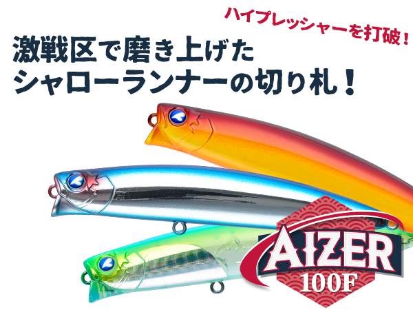
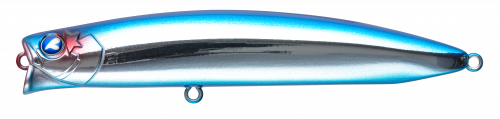
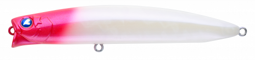
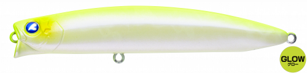
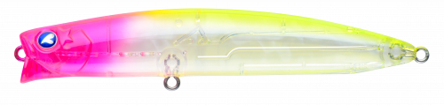
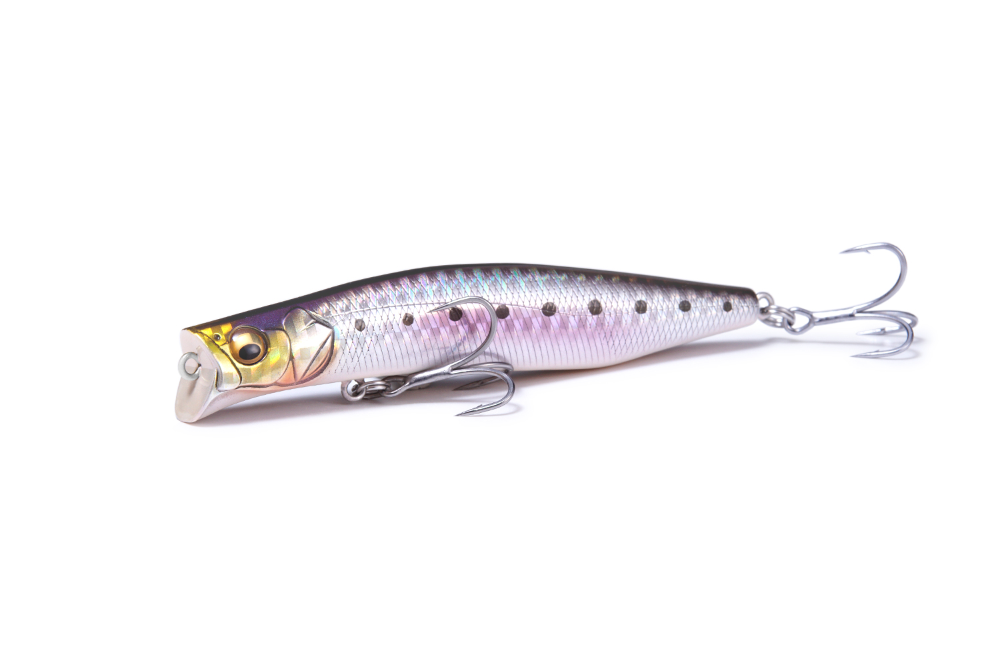
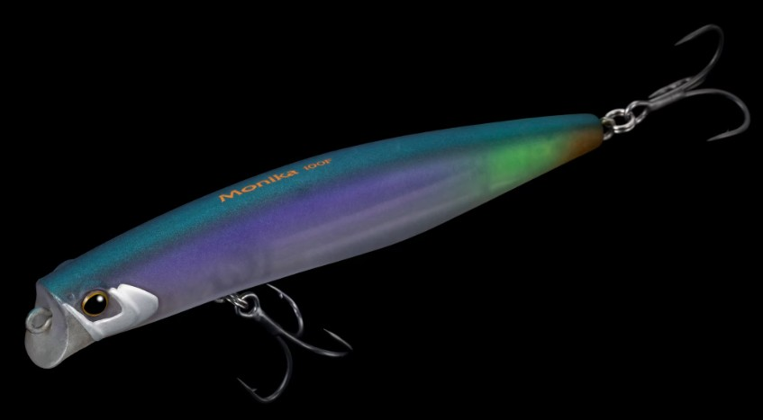

アイザー100F
（シャローランナー）
アイザー100F（AIZER 100F）はBlueBlue（ブルーブルー）のフローティングシャローランナーです。
プレッシャーが高い激戦区や、ベイトが小さく渋い状況で真価を発揮するように設計された100mmモデル。「魚は居るけど、喰わない」状況を打破する、弱ったベイトが流されながら漂うようなアクションが最大の魅力です。

画像出典:BlueBlue公式HP
スペック
- メーカー
- BlueBlue（ブルーブルー）
- タイプ
- フローティング（シャローランナー）
- 全長
- 100mm
- 自重
- 13.5g
- フック
- #5×2
- リング
- #3
- レンジ
- 5〜20cm
- ターゲット
- シーバス
- 価格
- 2,475円（税込）
- 発売
- 2025年4月29日
▼今すぐチェック

アイザー100Fの特徴
「渋い」「難しい」状況でこそ頼れる、喰わせに特化した100mmシャローランナー
-
水面下20cm以内を弱々しく漂う喰わせのアクション
弱ったベイトが流されながら漂っている様子を徹底的に追求。水面下20cm以内の絶妙なレンジを弱々しいアクションでゆっくり漂わせられるので、誰でも簡単にバイトを誘発できる。
-
10cmとは思えない飛距離
突き詰めたボディ設計と重心バランスにより、安定した飛行姿勢を実現。小型のシャローランナーながら、10cmとは思えない飛距離を体感できる。
-
水掴みの良いカップ形状で状態をイメージしやすい
独自のカップ形状がしっかりと水を掴み、適度な抵抗感を手元に伝える。シビアな状況で使うルアーは抵抗感が少ないものが多い中、遠投した先でもルアーがどんな状態か把握しやすいのは大きな利点だ。
アイザー100Fの使い方
基本はスローなただ巻き。水面下20cm以内をゆっくり漂わせるイメージで、弱ったベイトを演出する。カップ形状が手元に抵抗を伝えてくれるので、巻き速度を落としてもルアーが泳いでいるかを感じ取りやすい。
流れのある場所では、アップクロスに投げてラインスラッグを回収する程度の速度で流すドリフトも効果的。流れに乗せて漂わせると、アイザー100Fの「流されながら漂う」アクションを最大限に活かせます。
アイザー100Fの得意な状況
プレッシャーが高い激戦区や、ベイトが小さく渋い状況が最大の出番。
「ボイルはあるのに食わない」「魚は見えているのに反応しない」といった場面で、弱々しいアクションが効いてくる。シャローや表層付近に魚が付いていて、強いアピールでは見切られてしまう状況で選びたい1本です。
ワンポイント
アクションを付けすぎないのがコツ。ロッドワークは控えめにして、巻き速度と流れの強さだけでルアーを漂わせると、スレた魚にも違和感を与えにくくなります。
ベイトが大きい時や遠くのポイントを狙いたい時は、シリーズの125Fや160Fに持ち替えるのも有効です。
アイザーシリーズの使い分け
| モデル | 全長／自重 | 得意な場面 |
|---|---|---|
| 100F | 100mm／13.5g | 小型ベイト・渋い状況・レンジ5〜20cm（本記事のモデル） |
| 125F | 125mm／22g | シリーズの基本サイズ・レンジ5〜30cm |
| 125リラード | 125mm／24g | 一段深いレンジ20〜50cmを探りたい時 |
| 160F | 160mm／44g | 大型ベイト・レンジ5〜30cm |
アイザーは100F・125F・125リラード・160Fの4モデル展開。ベイトサイズで長さを選び、レンジを下げたい時は125リラードを使うのが基本だ。100Fはシリーズ最小で、小型ベイトと渋い状況を担う喰わせ担当のモデルになる。
オススメカラー
アイザー100Fは全12色展開。渋い状況のシーバスでオススメのカラーを厳選して紹介します。

#01 ブルーブルーメーカー名を冠したブランドの定番カラー。澄み潮のデイゲームで使いやすい。

#02 レッドヘッドクリアクリアボディでシルエットをぼかせる、スレた魚向けのカラー。

#03 チャートバックグロー濁り潮やナイトゲームで存在感を出せる高アピールカラー。

#08 ピンクチャートクリア視認性と透け感を両立した、常夜灯周りでも使いやすい1色。
画像出典:BlueBlue公式HP
アイザー100Fに似ているルアー
-

カゲロウ100F メガバス 詳細はこちら＞全長100mm・自重12gの対タフコン・シャローランナー。LBOⅡによる遠投性能とナチュラルなロールアクションを持ち、小型ベイトの渋い状況を狙うという立ち位置がアイザー100Fとほぼ同じ。レンジ20〜60cmと少し下を探りたい時に持ち替えたい。
-

モニカ100F シマノ 詳細はこちら＞全長100mmのフローティングシャローランナー。レンジ0〜10cmとアイザー100Fよりさらに浅い水面直下を引けるので、より表層を意識した魚を狙いたい時の持ち替え候補になる。